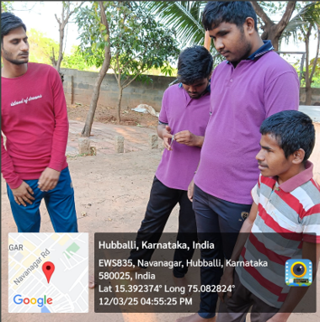
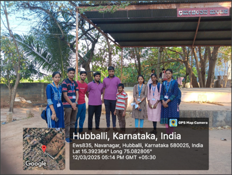

Meet Our Students




Helping blind students find reliable scribes during exams
This platform connects blind students with volunteer scribes during exam times. We aim to make the process smooth, verified, and dependable.
If you need assistance during exams, feel free to reach out to any of the following scribes: